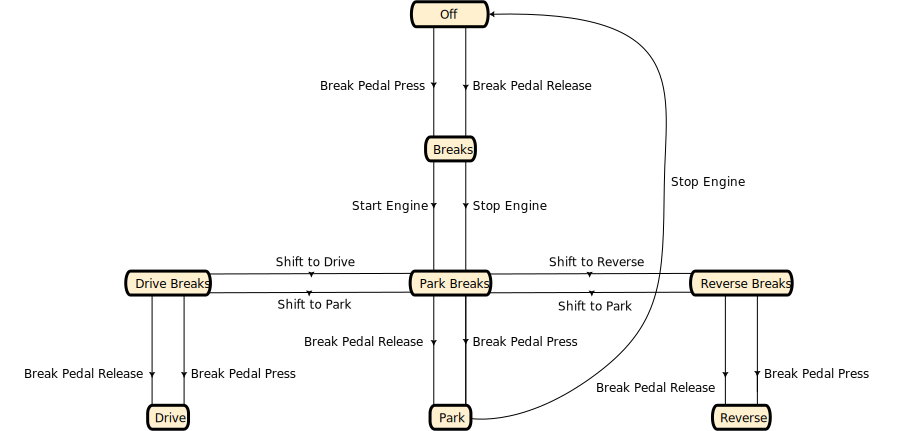

Car Transducer Example
The Car Transducer Example is a comprehensive example demonstrating Acceptor and Transducer features on a highly simplified model of a car with automatic transmission, keyless entry, only three gearbox positions, and lights.
State diagram:

In fact, the real state set is doubled: every state shown on the diagram comes with it “+Lights” counterpart.
This documentation is generated from the extended Markdown documentation using Extensible Markdown for Visual Studio Code.